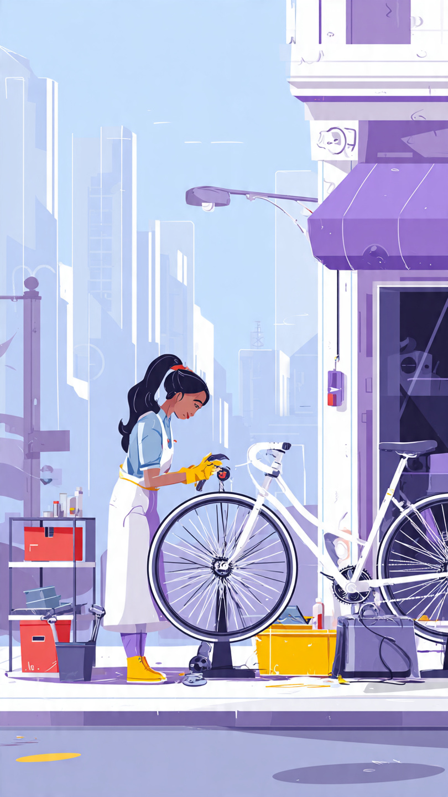

About Neon Cycle
Neon Cycle began in 2020 as a mobile bike repair service in Cape Town and opened a workshop in Woodstock in 2023 to meet growing demand for commuter bikes and eco-friendly transport.

Our Story
We started as a mobile repair service to make bike maintenance convenient for city commuters. As demand grew, we opened a physical workshop in Woodstock to offer sales, repairs, and community workshops.
Mission
To make biking affordable, safe, and accessible for city residents.
Vision
To become the most trusted bicycle shop in Cape Town by 2030.
Our Values
- Affordability — fair pricing and payment options.
- Reliability — quality repairs with a 30‑day recheck.
- Community — free group rides and maintenance workshops.
- Sustainability — refurbish and resell donated bikes.